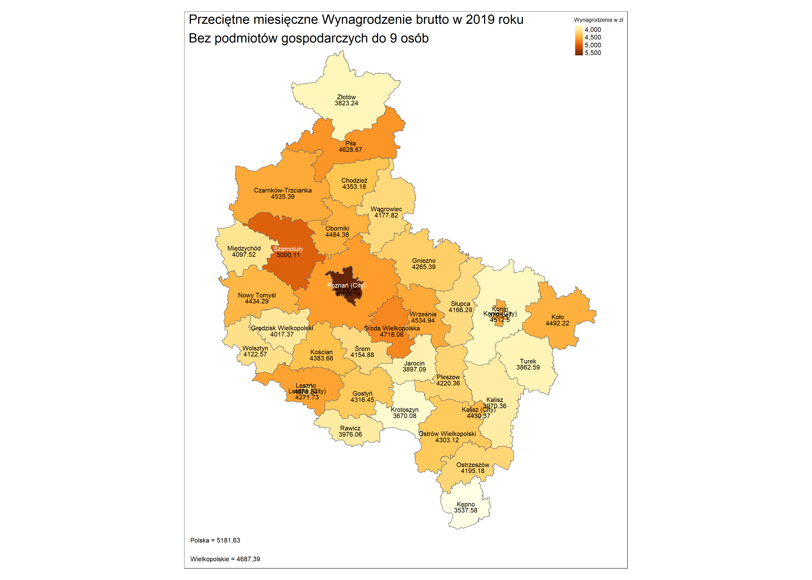

Kartogramy w pakiecie tmap
Na bazie kartogramOw z części Tworzenie prostego kartogramu ćw.1 oraz Tworzenie prostego kartogramu ćw.2, wykonaj je w pakiecie tmap.
BEZROBOCIE
tm_shape(dane_1) +
tm_fill()tm_shape(dane_1) +
tm_borders()tm_shape(dane_1) +
tm_polygons()tm_shape(dane_1) +
tm_fill() +
tm_borders()
tm_shape(dane_1) +
tm_polygons(col = 'UN_RATE')intevals<-c(3.6,5.2,6.8,8.4,10.1)
tm_shape(dane_1) +
tm_polygons(col = 'UN_RATE',breaks=intervals)intevals<-c(3.6,5.2,6.8,8.4,10.1)
tm_shape(dane_1) +
tm_polygons('UN_RATE',breaks=intervals,palette='BuGn')tm_shape(dane_1) +
tm_polygons('UN_RATE',breaks=intervals,palette='BuGn') +
tm_compass(type = "8star", position = c("left", "top")) +
tm_scale_bar(breaks = c(0, 100, 200), text.size = 0.7)tm_shape(dane_1) +
tm_polygons('UN_RATE',breaks=intervals,palette='BuGn') +
tm_compass(type = "8star", position = c("left", "top")) +
tm_scale_bar(breaks = c(0, 100, 200), text.size = 0.7) +
tm_style('bw')tm_shape(dane_1) +
tm_polygons('UN_RATE',breaks=intervals,palette='BuGn') +
tm_compass(type = "8star", position = c("left", "top")) +
tm_scale_bar(breaks = c(0, 100, 200), text.size = 0.7) +
tm_style('classic')tm_shape(dane_1) +
tm_polygons('UN_RATE',breaks=intervals,palette='BuGn') +
tm_compass(type = "8star", position = c("left", "top")) +
tm_scale_bar(breaks = c(0, 100, 200), text.size = 0.7) +
tm_style('cobalt')dane_1$groups<-as.character(cut(dane_1$UN_RATE,breaks=intervals))
etykiety=c("3,7 - 5,2","5,3 - 6,8","6,9 - 8,4","8,5 - 10,1")
ile<-as.character(paste0(" (",as.vector(table(dane_1$groups)),")"))
etykiety<-paste0(etykiety,ile)
tm_shape(dane_1) +
tm_polygons('UN_RATE',breaks=intervals,palette='BuGn',labels=etykiety,legend.reverse=T, title="%") +
tm_text("NAME_1", size = 0.8)+
tm_shape(dane_1) +
tm_text('UN_RATE', size=0.8, ymod=-1)+
tm_layout(title="Mapa 1. Stopa bezrobocia\nStan w końcu grudnia 2020 r.\nMap 1. Unemployment rate\nAs of the end of December 2020",
title.position = c(0.01,0.95),title.size = 0.6, legend.just = "center",
inner.margins=c(0.1, 0.1, 0.1, 0.1))+
tm_credits("Polska = 6.2%\nPoland",position = c("right","top"))WYNAGRODZENIA
tm_shape(dane_2) +
tm_polygons('WAGES',style="cont", title="Wynagrodzenia w zł") +
tm_text("NAME_2", size = 1, n=5)+
tm_shape(dane_2) +
tm_text('WAGES', size=1, ymod=-0.8)+
tm_layout(title="Przeciętne miesięczne Wynagrodzenie brutto w 2019 roku\nBez podmiotów gospodarczych do 9 osób",
title.position = c(0.01,0.97),title.size = 2, legend.just = "center", legend.text.size = 1,
legend.title.size = 1, inner.margins=c(0.07, 0.07, 0.07, 0.07)) +
tm_credits("Polska = 5181,63\n\nWielkopolskie = 4687,39",position = c("left","bottom"),size = 1)